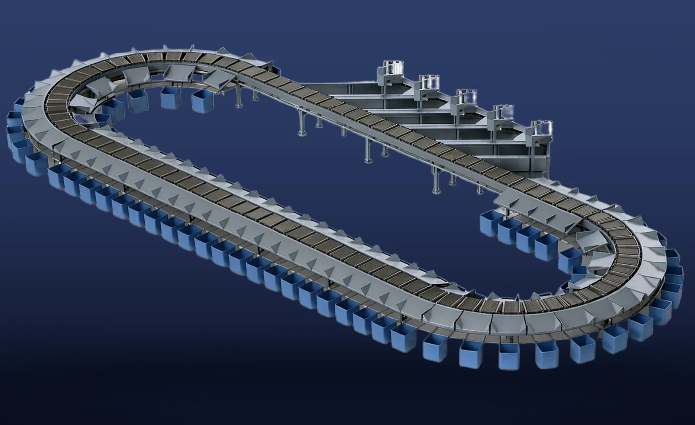

Belts on carriers arranged in a loop discharge parcels sideways. Designed for parcel, e-commerce and postal hubs serving many destinations.
Figures are based on the factories' October 2026 product materials. Actual capacity varies with parcel dimensions and weights, induction conditions, destination count and line configuration.
Ask about this productBack to products →Product features
Continuous sorting
Diverts small and medium parcels to multiple destinations.
Specifications & selection
| Single-zone sorting throughput | 21,000 items/hour |
|---|---|
| Maximum running speed | 3.5 m/s |
| Noise level | 72 dB or less |
Figures are based on the factories' October 2026 product materials. Actual capacity varies with parcel dimensions and weights, induction conditions, destination count and line configuration.
What to confirm before implementation
Please provide minimum and maximum parcel dimensions and weights, required throughput, destination count, available space, power supply, temperature range and existing equipment interfaces. Maintenance scope and installation steps are also confirmed individually.
Request specifications & quotation